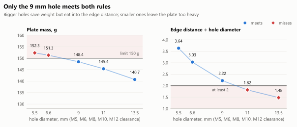

The Question
An aluminium plate, 120 by 80 by 6 mm, has a grid of six holes. Which clearance hole size, from M5 up to M12, keeps the plate at 150 g or less while leaving at least twice the hole diameter between each hole and the edge?
The Answer
Only the 9 mm hole works, the M8 clearance size. At 9 mm the plate weighs 148.4 g and the edge distance is 2.22 times the hole diameter. Bigger holes save weight but eat into the edge distance, and smaller ones leave the plate over its weight limit.
The Model
- Part
- A 120 × 80 × 6 mm plate with 8 mm corner radii and a 3 × 2 grid of through holes on a 40 mm pitch.
- Material
- 6061-T6 aluminium, density 2.70 g/cm³, used only for the mass.
- Hole sizes
- The standard medium clearance holes (ISO 273) for M5, M6, M8, M10 and M12 bolts: 5.5, 6.6, 9, 11 and 13.5 mm.
- Design rules
- Mass at most 150 g. Edge distance at least twice the hole diameter. At least 9 mm of material (1.5 times the thickness) between holes.
- Tool
- CadQuery 2.8, exporting STEP.
- What's measured
- From the finished solid: its volume and mass, its overall size, and the position and diameter of each hole.
The case file: recorded assumptions, limits and inputs
This is the study's own record, written before the run and saved with it, in the shorthand of the case file.
6061-T6 aluminium plate 120 x 80 x 6 mm with R8 corners and a 3 x 2 grid of clearance holes on a 40 mm pitch; hole diameter swept over ISO 273 medium clearance sizes for M5 to M12 (5.5 to 13.5 mm).
Assumptions, and How Each Is Checked
- Density 2.70 g/cm^3 (6061-T6); nominal dimensions, no manufacturing tolerances.
- Edge distance is measured from hole centre to the nearest straight edge; the hole grid stays clear of the corner fillets.
- Design rules: edge distance >= 2 d (common plate/sheet practice), web between holes >= 1.5 t.
Limits
- Geometry-only study: no structural or fatigue assessment of the holes.
- Design-rule limits are generic, not taken from a specific standard or customer specification.
Inputs
| Input | Value |
|---|---|
| length_mm | 120 |
| width_mm | 80 |
| thickness_mm | 6 |
| corner_radius_mm | 8 |
| hole_diameter_mm | 9 |
| holes_x | 3 |
| holes_y | 2 |
| hole_pitch_x_mm | 40 |
| hole_pitch_y_mm | 40 |
| density_g_per_mm3 | 0.0027 |

Why It Matters
Every study on this site starts from geometry made by a script, not drawn by hand. That's what lets a model be rerun at a different size by changing one number, and it's what lets an optimiser drive the geometry. But it only works if the script can be trusted to build what it was asked for.
This study checks exactly that, on a part simple enough that every property can be worked out by hand. It measures the finished solid, not the inputs, because a CAD script can run without error and still put a hole in the wrong place.
How I Checked It
- Measured, not assumed. Every number is measured from the finished solid, not taken from the inputs. That includes the volume, the overall size, and the position and diameter of each hole.
- Against a hand calculation. The volume matches the exact formula (plate, minus rounded corners, minus six holes) to the limit of floating-point arithmetic.
- The export survives. Each plate is written as a STEP file, read back in and confirmed unchanged, so what goes to the mesher or the machine shop is the part that was checked.

Limits, and What I'd Do Next
- Geometry only. There's no stress or fatigue check of the plate or its holes.
- The design rules are common practice, not taken from a particular standard or customer specification.
- Nominal dimensions, with no manufacturing tolerances.